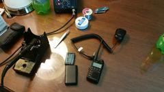
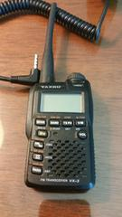
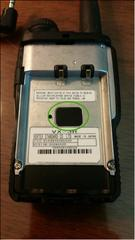
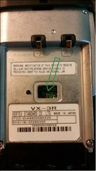
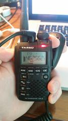

Modifying a Yaesu VX-3R for DEF CON
I'm sitting here in Las Vegas waiting for a friend to finish his booth duty at BlackHat. A number of groups here at DEF CON have radio repeaters setup in the 70 cm and the General Mobile Radio Service (GMRS) / Family Radio Service (FRS) bands. While I have little to do, I figured I'd turn my Yaesu VX-3R into an "experimental" radio and unlock the ability to transmit in the GMRS / FRS bands.
While reading up on this modification, a number of bots online raised concerns about the legality of operating the radio with this modification in place. This is a VERY grey area as there are a number of regulations that may cover this modification, along with "the spirit of amateur radio", which conflict either partially or completely. A number of them are as follows:
- The power that may be transmitted in the band.
- FRS ( and I believe GMRS), which is the band this modification is making available, requires that the antenna be fixed ( i.e. not removable).
- Personal radio equipment is permitted to be built and/or modified as long as the devices don't cause harmful interference.
- Learn by building and experimentation.
This issue can conflict, especially depending on the mood of the person interpreting, and thus must be complied with in a "best possible" way. I'm keeping my power down to prevent interference, but I'm going to modify my radio.
This is a very simple modification that was made even simpler by failing to use what I thought would be the correct tools. These photos are of my making the modification in a hotel room in Las Vegas before DEF CON. The most complicated part of the process is removing the little resistor buried deep in the radio after removing the protective sticker.
I started off trying to remove the little resistor down in there with a soldering iron. I have a good iron with a tip that works quite well for me. The iron method ended up failing because the resistor was buried so deep in the case. I then tried to open the case to no avail. At this point, I decided to try something a bit more "invasive". I poked the resistor with the pointed tip of my pocket knife and the body of the resistor broke. I proceeded to pick the rest of the resistor away with the tip of the knife for a few minutes, and voila, the resistor has been cleanly removed. Put the battery back in and the radio has reset itself. All is well.
   {kind=link}
{kind=link}
{kind=link}
{kind=link}
And here's the final picture with a quick squirt on an FRS Channel at about 0.1 W just to make sure the radio no longer displays error when attempting to transmit.
{kind=link}